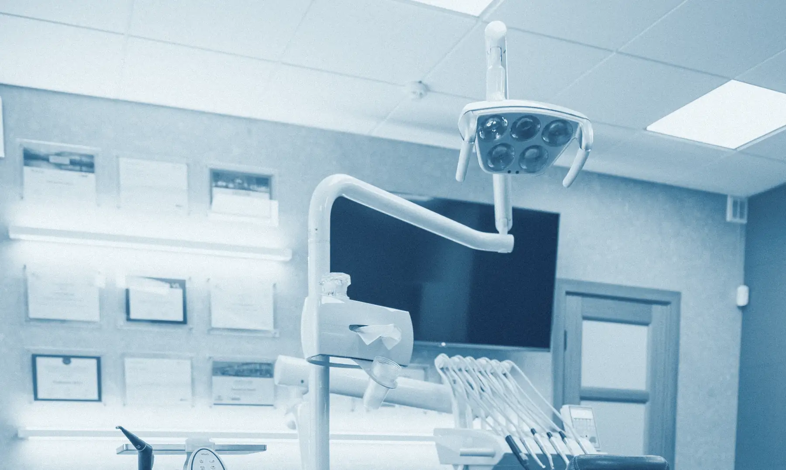

The dentist
Meet Dr. Kristi Elia.
Dr. Kristi Mitchell Elia, a general dentist serving El Dorado, Arkansas.
Training and standing in the profession
Dr. Elia graduated with honors from Baylor College of Dentistry and went on to advanced education in general dentistry.
Education
- Baylor College of Dentistry, Honor Graduate
- Doctorate of Dentistry, 2000
- Certificate of General Dentistry, 2001
- Advanced Education in General Dentistry Residency
Professional memberships
- American Dental Association
- Arkansas State Dental Association
- Academy of General Dentistry
- Southwest District Dental Society (Past President)
- Union County Dental Society
Community boards
- South Arkansas Community College Foundation, Director
- El Dorado Service League, Sustaining Member
- South Arkansas Developmental Center (Past)
- Fact Inc., Health Advisory Board (Past)